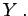

Inhalt Index DeskTop Bronstein

 Algebra und Diskrete Mathematik Algorithmen der Graphentheorie Grundbegriffe und Bezeichnungen
Algebra und Diskrete Mathematik Algorithmen der Graphentheorie Grundbegriffe und Bezeichnungen


Endliche Graphen besitzen eine endliche Knotenmenge und eine endliche Kantenmenge. Anderenfalls werden die Graphen unendlich genannt.
In regulären Graphen vom Grad r haben alle Knoten den Grad r.
Ein ungerichteter schlichter Graph mit der Knotenmenge V heißt vollständiger Graph, wenn je zwei verschiedene Knoten aus V durch eine Kante verbunden sind. Ein vollständiger Graph mit n-elementiger Knotenmenge wird mit Kn bezeichnet.
Kann man die Knotenmenge eines ungerichteten schlichten Graphen G in zwei disjunkte Klassen X und Y zerlegen, so daß jede Kante von G einen Knoten aus X mit einem Knoten aus Y verbindet, dann heißt G ein paarer Graph.
Ein paarer Graph wird vollständiger paarer Graph genannt, wenn jeder Knoten aus X mit jedem Knoten aus Y durch eine Kante verbunden ist. Ist X eine n-elementige und Y eine m-elementige Menge, dann wird der Graph mit Kn,m bezeichnet.
| Beispiel |
|
Die linke Abbildung zeigt einen vollständigen Graphen mit 5 Knoten. |
| Beispiel |
|
Die rechte Abbildung zeigt einen vollständigen paaren Graphen mit 2-elementiger Knotenmenge X und 3-elementiger Knotenmenge  |
Weitere spezielle Klassen von Graphen sind ebene Graphen, Bäume und Transportnetze. Ihre Eigenschaften werden jeweils in einem der folgenden Abschnitte angegeben.